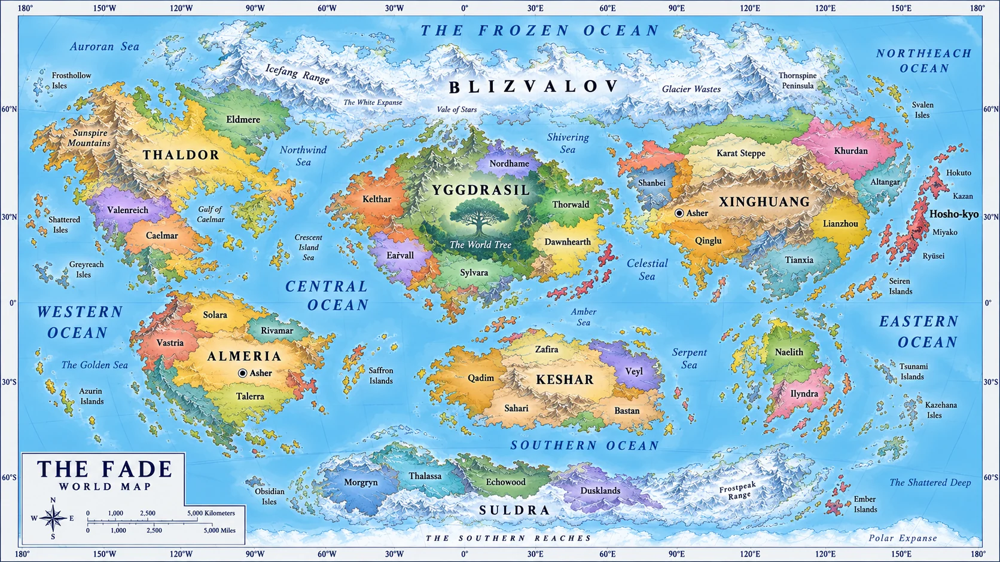

01 / EXPLORE THE UNKNOWN
โลกที่รอให้คุณค้นพบ.
จากเมืองริมคลอง Asher สู่ดินแดนสุดขอบโลก
เลือกจุดหมาย แล้วเปิดหน้าต่อไปของการเดินทาง

แผนที่ภาพฉบับเดิมยังมีชื่อ Asher ซ้ำทางตะวันออก — ตำแหน่งที่ใช้ในเรื่องคือ Asher ภายใน Almeria เท่านั้น
YOUR STORY BEGINS HERE
หนึ่งเมืองเล็ก ๆ เรื่องราวที่ไม่สิ้นสุด
ทำความรู้จักบ้านของ Jonah Guild ก่อนออกเดินทาง
02 / THE WORLD REMEMBERS
คลังเรื่องราว.
องค์กร ประวัติศาสตร์ และพลังที่กำหนดโลกใบนี้
03 / FACES OF THE FATE
ผู้คนที่มีเรื่องราว.
ทำความรู้จักเหล่าตัวละครที่อยู่บนเส้นทางเดียวกับคุณ
04 / A SMALL STEP INTO ADVENTURE
บอร์ดภารกิจ.
จุดเริ่มต้นของมิตรภาพ และการเดินทางครั้งใหม่
จุดเริ่มต้นที่ Asher
พื้นที่สำหรับติดตามเนื้อเรื่องหลัก — รอ GM ยืนยันบทและความคืบหน้า
05 / LETTERS FROM THE GUILD
ข่าวจากกิลด์.
ประกาศ ข่าวสาร และสิ่งที่กำลังจะเกิดขึ้น
MEET THE COMMUNITY
เรื่องราวมีชีวิต เมื่อมีคุณอยู่ด้วย
พบเพื่อนร่วมผจญภัยและติดตามประกาศจากทีมงาน
06 / WRITE YOUR FIRST CHAPTER
เรื่องราวของคุณ.
เริ่มสร้างตัวละคร แล้วพกเรื่องราวของคุณเข้าสู่ The Fate